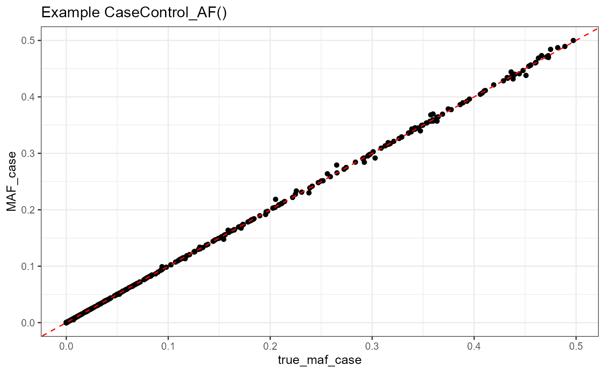
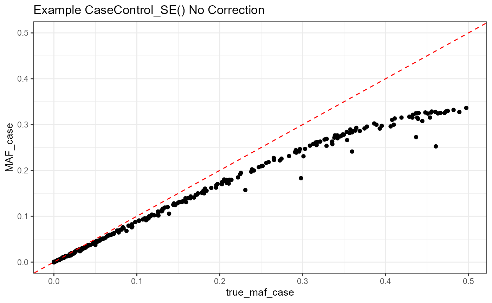
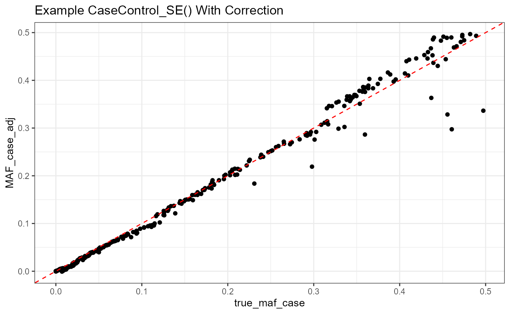
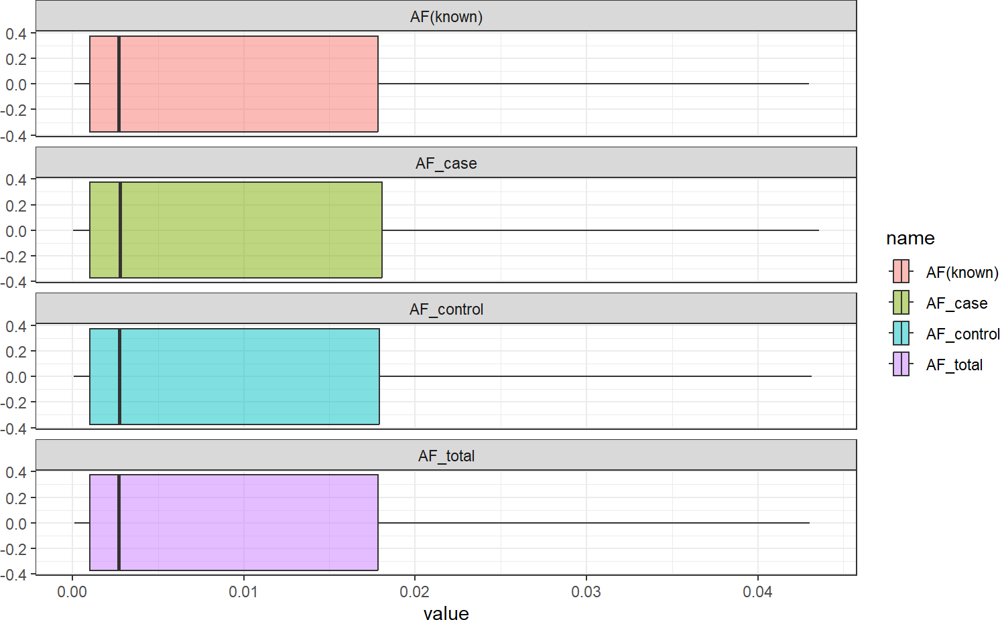

Motivation
Growth in the field of genetic and genomic research has vastly increased the amount of available data which is often made publicly available through summary statistics. While there are many opportunities and new methods to use summary-level genetic data, it is often limited by the statistics that are made available. Many post-hoc analyses of disease data require case and control allele frequencies (AFs), which are not always published. We present a framework to derive the case and control AFs from Genome Wide Association Study (GWAS) summary statistics using the whole sample (case and control aggregated) AF, odds ratio, and case and control sample sizes, and compare it to a previously published method that uses the standard error (SE), odds ratio, and case and control sample sizes to recapitulate case and control AFs.
Results
In simulations and real data, we find estimating case and control AFs using the whole sample AF is highly accurate across all settings. When applying this method to the Pan-UK Biobank we find high concordance with the known AFs. Conversely, we find that in Pan-UK Biobank and simulations including covariates, deriving case and control AFs from the SE underestimates the minor AF (MAF) for higher MAFs. To enable estimation of case and control AFs using SE, we use gnomAD v3.1.2 AFs as a proxy for true AFs to estimate and correct for bias fit. While estimating the case control AF using the whole sample AF is preferred due to its high accuracy, estimating from the SE can be used more broadly since the SE can be calculated from the p-value and beta estimate, which are more commonly provided. Both methods expand the utility of publicly available genetic summary statistics, can be used when different statistics are reported, and promote the reusability of genomic data.
This document introduces you to the functions in CCAFE and
gives small examples of how they can be used with summary
statistics.
Find more details and documentation on GitHub: (https://wolffha.github.io/CCAFE_documentation/)
To jump forward to individual function specifics:
CaseControl_AF – fast forward to example
CaseControl_SE – fast forward to example
To view details on using GWAS VCF formatted data and Bioconductor packages to prepare your data for use in CCAFE:
To install this package from BioConductor:
if (!require("BiocManager", quietly = TRUE))
install.packages("BiocManager")
BiocManager::install("CCAFE")To install this package from GitHub:
if(!require(devtools, quietly = TRUE)) {
install.packages("devtools")
}
devtools::install_github("https://github.com/wolffha/CCAFE")CCAFE contains two functions:
The two functions are both used to reconstruct case and control allele frequencies (AFs) from genetic summary statistics.
The user will select which function to use based on the available summary statistics.
CaseControl_AF() has the following required parameters:
CaseControl_SE() has the follwoing required parameters:
Code adapted from ReACt GroupFreq function available here: (https://github.com/Paschou-Lab/ReAct/blob/main/GrpPRS_src/CountConstruct.c)
CaseControl_SE has the following required inputs:
CaseControl_SE has the following optional inputs:
If sex_chromosomes == TRUE and remove_sex_chromosomes == FALSE, the following inputs are required:
If do_correction == TRUE, then data must be provided that includes harmonized data with proxy MAFs
Returns the data dataframe with three additional columns:
Each columns contains the estimated MAF in the cases, controls, and whole sample, respectively. The number of rows is equal to the number of variants
If do_correction == TRUE, three additional columns are included in the dataframe:
Containing MAFs adjusted using the the proxy MAFs to model the expected bias.
NOTE: This method assumes we are estimating the minor allele frequency (MAF). The minor allele may or may not be the effect variant used to calculate AF for the GWAS summary statistics. For additional details see vignette titled “CCAFE Extra Details”
These examples use the provided sample data which is a subset of 500 variants from chromosome 1 of the Pan-UKBB diabetes GWAS in non-Finnish European individuals.
Here is a quick demonstration of using the CaseControl_AF function in the CCAFE package using the sample data. This code block loads the library. It then loads the sample data and ensures that it is in the required format (dataframe). It then runs the methods using the required parameters (data, N_case, N_control, OR_colname, AF_total_colname) and prints out the first few lines of the resulting returned dataframe.
# load the data
data("sampleDat")
sampleDat <- as.data.frame(sampleDat)
results_af <- CaseControl_AF(data = sampleDat,
N_case = 16550,
N_control = 403923,
OR_colname = "OR",
AF_total_colname = "true_maf_pop")
head(results_af)
#> CHR POS REF ALT true_maf_case true_maf_control beta SE
#> 1 chr1 226824710 C T 2.048e-01 2.041e-01 0.0003441 0.01471
#> 2 chr1 117812346 G A 4.480e-01 4.471e-01 -0.0013920 0.01196
#> 3 chr1 230838863 C T 1.647e-01 1.642e-01 0.0042250 0.01620
#> 4 chr1 93121792 ATT A 0.000e+00 0.000e+00 -0.1058000 3.53000
#> 5 chr1 240236388 G A 1.114e-05 3.775e-05 -1.2540000 1.25300
#> 6 chr1 12385196 G A 1.390e-02 1.402e-02 -0.0152700 0.05046
#> gnomad_maf OR true_maf_pop AF_case AF_control
#> 1 2.04050e-01 1.0003442 2.041276e-01 2.041813e-01 2.041254e-01
#> 2 4.45508e-01 0.9986090 4.471354e-01 4.468049e-01 4.471490e-01
#> 3 1.82612e-01 1.0042339 1.642197e-01 1.647775e-01 1.641968e-01
#> 4 1.07925e-04 0.8996046 0.000000e+00 0.000000e+00 0.000000e+00
#> 5 8.82145e-05 0.2853611 3.670262e-05 1.077692e-05 3.776488e-05
#> 6 1.15995e-02 0.9848460 1.401528e-02 1.381395e-02 1.402353e-02We can then plot the estimates from this example using the provided known AFs.
# plot the results
# first need minor allele frequency to compare to true_maf_case
results_af$MAF_case <- sapply(results_af$AF_case, function(x)
ifelse(x > 0.5, 1-x, x))
results_af <- as.data.frame(results_af)
ggplot(results_af, aes(x = true_maf_case, y = MAF_case)) +
geom_point() +
geom_abline(slope = 1, intercept = 0, linetype = "dashed", color = "red") +
theme_bw() +
ggtitle("Example CaseControl_AF()")
Here is a quick demonstration of using the CaseControl_SE function in the CCAFE package using the sample data. This code block loads the library. It then loads the sample data and ensures that it is in the required format (dataframe). It then runs the methods using the required parameters (data, N_case, N_control, OR_colname, SE_colname, chromosome_colname, position_colname, do_correction, sex_chromosomes) and prints out the first few lines of the resulting returned dataframe.
# load the data
data("sampleDat")
# always ensure data is a dataframe before inputting to CCAFE methods
sampleDat <- as.data.frame(sampleDat)
# First run without correction
results_se_noCorr <- CaseControl_SE(data = sampleDat,
N_case = 16550,
N_control = 403923,
OR_colname = "OR",
SE_colname = "SE",
chromosome_colname = "CHR",
position_colname = "POS",
do_correction = FALSE,
sex_chromosomes = FALSE)
head(results_se_noCorr)
#> CHR POS REF ALT true_maf_case true_maf_control beta SE
#> 1 chr1 226824710 C T 2.048e-01 2.041e-01 0.0003441 0.01471
#> 2 chr1 117812346 G A 4.480e-01 4.471e-01 -0.0013920 0.01196
#> 3 chr1 230838863 C T 1.647e-01 1.642e-01 0.0042250 0.01620
#> 4 chr1 93121792 ATT A 0.000e+00 0.000e+00 -0.1058000 3.53000
#> 5 chr1 240236388 G A 1.114e-05 3.775e-05 -1.2540000 1.25300
#> 6 chr1 12385196 G A 1.390e-02 1.402e-02 -0.0152700 0.05046
#> gnomad_maf OR true_maf_pop MAF_case MAF_control MAF_total
#> 1 2.04050e-01 1.0003442 2.041276e-01 1.764905e-01 1.764405e-01 1.764425e-01
#> 2 4.45508e-01 0.9986090 4.471354e-01 3.263835e-01 3.266896e-01 3.266776e-01
#> 3 1.82612e-01 1.0042339 1.642197e-01 1.392353e-01 1.387297e-01 1.387496e-01
#> 4 1.07925e-04 0.8996046 0.000000e+00 2.513875e-06 2.794421e-06 2.783379e-06
#> 5 8.82145e-05 0.2853611 3.670262e-05 1.946826e-05 6.821993e-05 6.630105e-05
#> 6 1.15995e-02 0.9848460 1.401528e-02 1.250050e-02 1.269041e-02 1.268294e-02We can then plot the estimates from this example using the provided known AFs.
# plot the results
ggplot(results_se_noCorr, aes(x = true_maf_case, y = MAF_case)) +
geom_point() +
geom_abline(slope = 1, intercept = 0, linetype = "dashed", color = "red") +
theme_bw() +
coord_cartesian(ylim = c(0,.5)) +
ggtitle("Example CaseControl_SE() No Correction")
Here is a quick demonstration of using the CaseControl_SE function in the CCAFE package using the sample data, but also performing the provided bias correction. This code block loads the library. It then loads the sample data and ensures that it is in the required format (dataframe). It then runs the methods using the required parameters (data, N_case, N_control, OR_colname, SE_colname, chromosome_colname, position_colname, do_correction, sex_chromosomes) and prints out the first few lines of the resulting returned dataframe.
# load the data
data("sampleDat")
# always ensure data is a dataframe before inputting to CCAFE methods
sampleDat <- as.data.frame(sampleDat)
corr_data <- data.frame(CHR = sampleDat$CHR,
POS = sampleDat$POS,
proxy_MAF = sampleDat$gnomad_maf)
# now run with correction
results_se_corr <- CaseControl_SE(data = sampleDat,
N_case = 16550,
N_control = 403923,
OR_colname = "OR",
SE_colname = "SE",
chromosome_colname = "CHR",
position_colname = "POS",
do_correction = TRUE,
correction_data = corr_data,
sex_chromosomes = FALSE)
head(results_se_corr)
#> CHR POS REF ALT true_maf_case true_maf_control beta SE
#> 1 chr1 226824710 C T 2.048e-01 2.041e-01 0.0003441 0.01471
#> 2 chr1 117812346 G A 4.480e-01 4.471e-01 -0.0013920 0.01196
#> 3 chr1 230838863 C T 1.647e-01 1.642e-01 0.0042250 0.01620
#> 4 chr1 93121792 ATT A 0.000e+00 0.000e+00 -0.1058000 3.53000
#> 5 chr1 240236388 G A 1.114e-05 3.775e-05 -1.2540000 1.25300
#> 6 chr1 12385196 G A 1.390e-02 1.402e-02 -0.0152700 0.05046
#> gnomad_maf OR true_maf_pop MAF_case MAF_control MAF_total
#> 1 2.04050e-01 1.0003442 2.041276e-01 1.764905e-01 1.764405e-01 1.764425e-01
#> 2 4.45508e-01 0.9986090 4.471354e-01 3.263835e-01 3.266896e-01 3.266776e-01
#> 3 1.82612e-01 1.0042339 1.642197e-01 1.392353e-01 1.387297e-01 1.387496e-01
#> 4 1.07925e-04 0.8996046 0.000000e+00 2.513875e-06 2.794421e-06 2.783379e-06
#> 5 8.82145e-05 0.2853611 3.670262e-05 1.946826e-05 6.821993e-05 6.630105e-05
#> 6 1.15995e-02 0.9848460 1.401528e-02 1.250050e-02 1.269041e-02 1.268294e-02
#> MAF_total_adj MAF_control_adj MAF_case_adj
#> 1 2.100692e-01 2.100673e-01 2.101173e-01
#> 2 4.834218e-01 4.834338e-01 4.831277e-01
#> 3 1.594029e-01 1.593830e-01 1.598885e-01
#> 4 2.783379e-06 2.794421e-06 2.513875e-06
#> 5 6.630105e-05 6.821993e-05 1.946826e-05
#> 6 9.160387e-03 9.167862e-03 8.977955e-03Again, we can plot the estimates (corrected) and compare them to the provided known AFs and see reduced bias.
# plot the results
ggplot(results_se_corr, aes(x = true_maf_case, y = MAF_case_adj)) +
geom_point() +
geom_abline(slope = 1, intercept = 0, linetype = "dashed", color = "red") +
theme_bw() +
ggtitle("Example CaseControl_SE() With Correction")
This software package aims to increase the utility of existing, publicly available genomic summary data from genome-wide association studies (GWAS). Summary statistics are still widely underutilized, despite their wide availability. As such, Bioconductor packages with methods specifically designed to analyze these statistics are still being developed.
The most commonly used repository of these summary statistics is the NHGRI GWAS Catalog (https://www.ebi.ac.uk/gwas/). From the GWAS catalog, a user can download full summary statistics through the FTP sites. The majority of these summary statistics are zipped plain text (usually space or tab delimited) files. The GWAS Catalog itself has recommended a tabular, plain-text format as its recommended GWAS summary statistic format. As such, this tabular data is most simply read into R as a dataframe structure.
While the many users will download the GWAS files and load them into R, there are other ways to obtain GWAS summary statistics, including through the IEU Open GWAS Project (https://gwas.mrcieu.ac.uk/). The IEU Open GWAS Project instead uses the GWAS VCF format (https://doi.org/10.1101/2020.05.29.115824) to store GWAS summary statistics and ensure alignment to the hg19 reference genome. We can use an assortment of Bioconductor packages and data structures to work with GWAS VCF data.
First we will make use of the Bioconductor package VariantAnnotation to handle VCF data
BiocManager::install("VariantAnnotation")
suppressWarnings(suppressPackageStartupMessages({
library(VariantAnnotation)
library(tidyverse)
}))We will use the VCF from this GWAS of Type 2 Diabetes https://doi.org/10.1038/s41588-018-0084-1. A subset of 10,000 variants has been stored within the package and can be loaded.
data("vcf_sample")We can see the name of the GWAS dataset (refers to the IEU GWAS database ID name)
To understand what the data format, we can look view the VCF object
vcf_sample
#> class: CollapsedVCF
#> dim: 10000 1
#> rowRanges(vcf):
#> GRanges with 5 metadata columns: paramRangeID, REF, ALT, QUAL, FILTER
#> info(vcf):
#> DataFrame with 1 column: AF
#> info(header(vcf)):
#> Number Type Description
#> AF A Float Allele Frequency
#> geno(vcf):
#> List of length 9: ES, SE, LP, AF, SS, EZ, SI, NC, ID
#> geno(header(vcf)):
#> Number Type Description
#> ES A Float Effect size estimate relative to the alternative allele
#> SE A Float Standard error of effect size estimate
#> LP A Float -log10 p-value for effect estimate
#> AF A Float Alternate allele frequency in the association study
#> SS A Integer Sample size used to estimate genetic effect
#> EZ A Float Z-score provided if it was used to derive the EFFECT an...
#> SI A Float Accuracy score of summary data imputation
#> NC A Integer Number of cases used to estimate genetic effect
#> ID 1 String Study variant identifierThe columns that we want for use in CCAFE are:
From the rowRanges object:
From the geno object:
We then want to convert this VCF formatted dataset into a simple dataframe to use with CCAFE.
# first we will get the info from GRanges object (position, RSID)
meta <- as.data.frame(ranges(vcf_sample))
meta <- meta[,c(1, 4)]
colnames(meta) <- c("Position", "RSID")
# get the chromosome (as a)
meta$Chromosome <- as.vector(seqnames(rowRanges(vcf_sample)))
# now we can also get the meta data (REF, ALT) from the GRanges object
meta <- cbind(meta, mcols(vcf_sample)[,c(2,3)])
rownames(meta) <- seq(1, nrow(meta))
# now we will get the info from the geno object
geno_dat <- data.frame(
beta = unlist(geno(vcf_sample)$ES),
SE = unlist(geno(vcf_sample)$SE),
AF = unlist(geno(vcf_sample)$AF)
)
df_data <- cbind(meta, geno_dat)
head(df_data)
#> Position RSID Chromosome REF ALT beta SE AF
#> 1 762320 rs75333668 1 C T -0.0352 0.0574 0.0078
#> 2 861349 rs200686669 1 C T -0.0299 0.1821 0.0034
#> 3 865545 rs201186828 1 G A 0.1188 0.1535 0.0041
#> 4 865584 rs148711625 1 G A -0.2004 0.0840 0.0219
#> 5 865625 rs146327803 1 G A -0.0778 0.2306 0.0046
#> 6 865628 rs41285790 1 G A -0.0037 0.0510 0.0049For CCAFE we will use OR, so let’s create this column by exponentiating the effect estimate
df_data$OR <- exp(df_data$beta)Let’s now apply the CCAFE methods to get case and control specific AFs
First, since we have total AF, we’ll use CaseControl_AF
df_data <- CaseControl_AF(data = df_data,
N_case = 48286,
N_control = 250671,
OR_colname = "OR",
AF_total_colname = "AF")
head(df_data)
#> Position RSID Chromosome REF ALT beta SE AF OR
#> 1 762320 rs75333668 1 C T -0.0352 0.0574 0.0078 0.9654123
#> 2 861349 rs200686669 1 C T -0.0299 0.1821 0.0034 0.9705426
#> 3 865545 rs201186828 1 G A 0.1188 0.1535 0.0041 1.1261447
#> 4 865584 rs148711625 1 G A -0.2004 0.0840 0.0219 0.8184033
#> 5 865625 rs146327803 1 G A -0.0778 0.2306 0.0046 0.9251494
#> 6 865628 rs41285790 1 G A -0.0037 0.0510 0.0049 0.9963068
#> AF_case AF_control
#> 1 0.007574252 0.007843485
#> 2 0.003315901 0.003416200
#> 3 0.004523116 0.004018497
#> 4 0.018530155 0.022549123
#> 5 0.004309041 0.004656047
#> 6 0.004884892 0.004902910We can look at a comparison of the AFs
Create a dataframe to plot
plotdata_AF <- df_data %>% dplyr::select(AF, AF_case, AF_control)
plotdata_AF$AF_total <- (plotdata_AF$AF_case*48286 + plotdata_AF$AF_control*250671)/(298857)
colnames(plotdata_AF)[1] <- "AF(known)"
plotdata_AF_long <- pivot_longer(plotdata_AF, cols = colnames(plotdata_AF))Plot the results
ggplot(plotdata_AF_long, aes(x = value, fill = name)) +
geom_boxplot(alpha = 0.5, outliers = FALSE) +
facet_wrap(~name, nrow = 4) +
theme_bw()
These case and control AFs can now be used in further downstream analyses. For example, if the data was harmonized with a reference panel, then Summix2 (https://www.bioconductor.org/packages/release/bioc/html/Summix.html) could be used to estimate substructure in the GWAS sample (total sample, cases, or controls). The AFs could also be used in case-case GWAS (see https://wolffha.github.io/CCAFE_documentation/articles/CCAFE_CCGWAS.html) or certain meta-analysis software (e.g. https://doi.org/10.1038/s41598-022-12185-6).
For ease of use of CCAFE with VCF files, we have included a function ‘CCAFE_convertVCF()’.
It performs the steps outlined above, assuming the user has loaded their VCF into R.
df_data_2 <- CCAFE_convertVCF(vcf_sample)
#> Valid VCF object, converting to dataframe for CCAFE...
df_data_2 <- CaseControl_AF(data = df_data_2,
N_case = 48286,
N_control = 250671,
OR_colname = "OR",
AF_total_colname = "AF")
head(df_data_2)
#> Position RSID Chromosome REF ALT beta SE AF OR
#> 1 762320 rs75333668 1 C T -0.0352 0.0574 0.0078 0.9654123
#> 2 861349 rs200686669 1 C T -0.0299 0.1821 0.0034 0.9705426
#> 3 865545 rs201186828 1 G A 0.1188 0.1535 0.0041 1.1261447
#> 4 865584 rs148711625 1 G A -0.2004 0.0840 0.0219 0.8184033
#> 5 865625 rs146327803 1 G A -0.0778 0.2306 0.0046 0.9251494
#> 6 865628 rs41285790 1 G A -0.0037 0.0510 0.0049 0.9963068
#> AF_case AF_control
#> 1 0.007574252 0.007843485
#> 2 0.003315901 0.003416200
#> 3 0.004523116 0.004018497
#> 4 0.018530155 0.022549123
#> 5 0.004309041 0.004656047
#> 6 0.004884892 0.004902910
sessionInfo()
#> R version 4.4.1 (2024-06-14 ucrt)
#> Platform: x86_64-w64-mingw32/x64
#> Running under: Windows 11 x64 (build 26100)
#>
#> Matrix products: default
#>
#>
#> locale:
#> [1] LC_COLLATE=English_United States.utf8
#> [2] LC_CTYPE=English_United States.utf8
#> [3] LC_MONETARY=English_United States.utf8
#> [4] LC_NUMERIC=C
#> [5] LC_TIME=English_United States.utf8
#>
#> time zone: America/Denver
#> tzcode source: internal
#>
#> attached base packages:
#> [1] stats4 stats graphics grDevices utils datasets methods
#> [8] base
#>
#> other attached packages:
#> [1] VariantAnnotation_1.52.0 Rsamtools_2.22.0
#> [3] Biostrings_2.74.0 XVector_0.46.0
#> [5] SummarizedExperiment_1.36.0 Biobase_2.66.0
#> [7] GenomicRanges_1.58.0 GenomeInfoDb_1.42.1
#> [9] IRanges_2.40.0 S4Vectors_0.44.0
#> [11] MatrixGenerics_1.18.0 matrixStats_1.4.1
#> [13] BiocGenerics_0.52.0 lubridate_1.9.4
#> [15] forcats_1.0.0 stringr_1.5.1
#> [17] dplyr_1.1.4 purrr_1.0.2
#> [19] readr_2.1.5 tidyr_1.3.1
#> [21] tibble_3.2.1 ggplot2_3.5.1
#> [23] tidyverse_2.0.0 CCAFE_0.99.3
#> [25] BiocStyle_2.34.0
#>
#> loaded via a namespace (and not attached):
#> [1] DBI_1.2.3 bitops_1.0-9 rlang_1.1.4
#> [4] magrittr_2.0.3 compiler_4.4.1 RSQLite_2.3.9
#> [7] GenomicFeatures_1.58.0 png_0.1-8 systemfonts_1.1.0
#> [10] vctrs_0.6.5 pkgconfig_2.0.3 crayon_1.5.3
#> [13] fastmap_1.2.0 labeling_0.4.3 utf8_1.2.4
#> [16] rmarkdown_2.29 tzdb_0.4.0 UCSC.utils_1.2.0
#> [19] ragg_1.3.3 bit_4.5.0.1 xfun_0.49
#> [22] zlibbioc_1.52.0 cachem_1.1.0 jsonlite_1.8.9
#> [25] blob_1.2.4 DelayedArray_0.32.0 BiocParallel_1.40.0
#> [28] parallel_4.4.1 R6_2.5.1 bslib_0.8.0
#> [31] stringi_1.8.4 rtracklayer_1.66.0 jquerylib_0.1.4
#> [34] bookdown_0.42 knitr_1.49 Matrix_1.7-1
#> [37] timechange_0.3.0 tidyselect_1.2.1 rstudioapi_0.17.1
#> [40] abind_1.4-8 yaml_2.3.10 codetools_0.2-20
#> [43] curl_6.0.1 lattice_0.22-6 withr_3.0.2
#> [46] KEGGREST_1.46.0 evaluate_1.0.1 desc_1.4.3
#> [49] pillar_1.9.0 BiocManager_1.30.25 generics_0.1.3
#> [52] RCurl_1.98-1.16 hms_1.1.3 munsell_0.5.1
#> [55] scales_1.3.0 glue_1.8.0 tools_4.4.1
#> [58] BiocIO_1.16.0 BSgenome_1.74.0 GenomicAlignments_1.42.0
#> [61] fs_1.6.5 XML_3.99-0.17 grid_4.4.1
#> [64] AnnotationDbi_1.68.0 colorspace_2.1-1 GenomeInfoDbData_1.2.13
#> [67] restfulr_0.0.15 cli_3.6.3 textshaping_0.4.1
#> [70] fansi_1.0.6 S4Arrays_1.6.0 gtable_0.3.6
#> [73] sass_0.4.9 digest_0.6.36 SparseArray_1.6.0
#> [76] rjson_0.2.23 htmlwidgets_1.6.4 farver_2.1.2
#> [79] memoise_2.0.1 htmltools_0.5.8.1 pkgdown_2.1.1
#> [82] lifecycle_1.0.4 httr_1.4.7 bit64_4.5.2